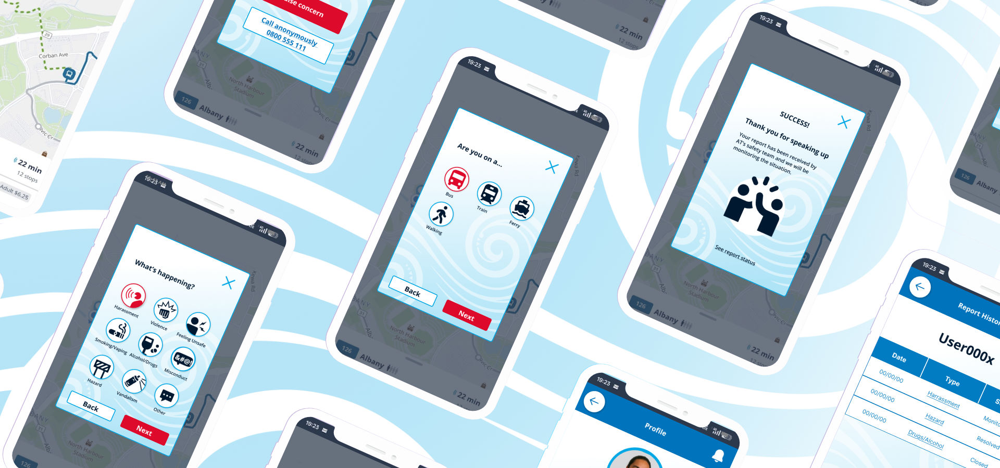
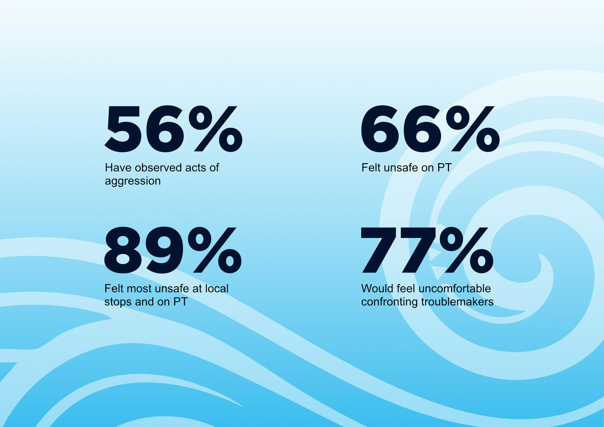
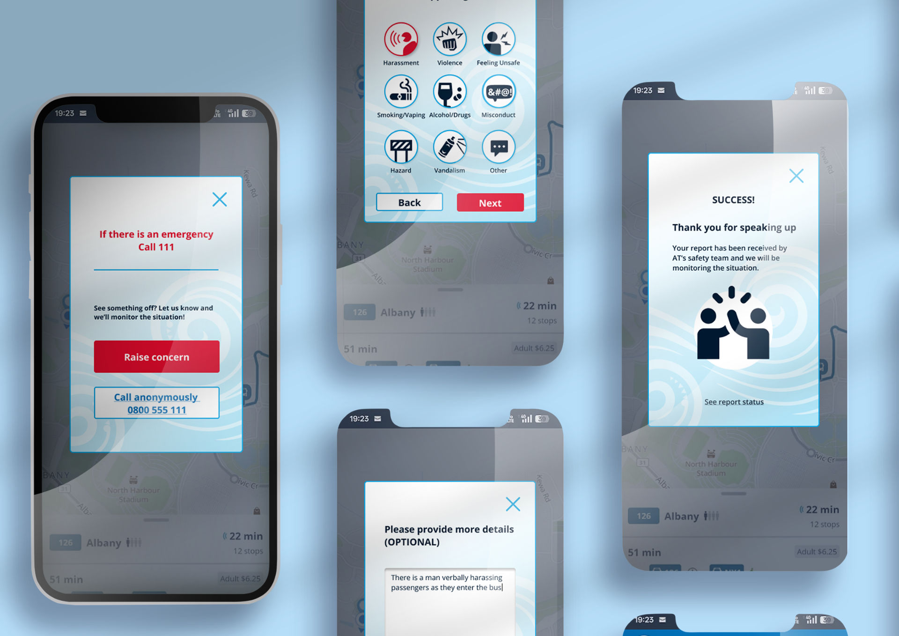
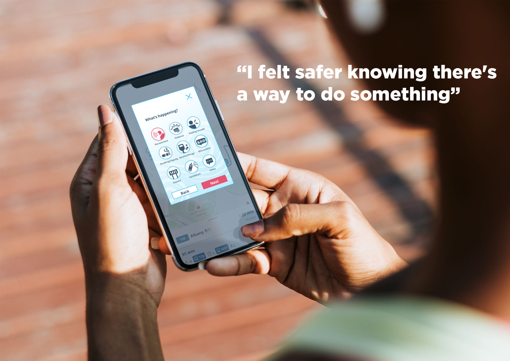

Safety on Auckland Transport
A public transport safety campaign.
How can we help Aucklanders feel and be safer on public transport?
The Problem
Public sentiment about safety on Auckland public transport has become increasingly negative.
Auckland Transport has a system in place for users to report anything that might make them feel unsafe; however, this system is poorly advertised, difficult to access, and the outcomes are unclear. This leads to a feeling of powerlessness as users don't know that there are steps they can take to improve their safety.
The Solution
An accessible and intuitive reporting feature integrated into the AT App that provides clear feedback on what happens to reports and how AT uses that feedback to create safer systems. This puts power back in the hands of the user, improving their sense of safety.
"I felt safer knowing there's a way to do something."
Research
For this project, my goal was to empathise with users of Auckland's public transport to identify real pain points.
Observations
There were a variety of points along my journey on all three modes of public transport where a user might feel uneasy, uncertain, and stressed — all of which heightened feelings of unsafety.
Survey of PT Users
The combination of observations with user feedback from surveys revealed that AT safety features aren't implemented where people feel most unsafe. A report feature could be with users at every step of the journey, yet most were unaware that it existed.
Key Findings
Reporting as a safe intervention
People consider reporting a valuable, non-physical way of intervening.
The feature is invisible
Very few people know about the report feature on the AT app.
A frustrating dead end
Filing a report on the AT app redirects users to the website, becoming a quit point for many.

Key research findings
Ideation & Strategy
Target Audience
Young adults aged 18–25 years old using public transport regularly.
Personas
Stephanie Williams
Motivated and busy, she uses PT to get to uni, job interviews, and social meet-ups.
Needs
Feel safe and secure while using public transport.
Pain Points
Hates confrontation.
Nikau Rawiri
Quiet and observant, he's adjusting to Auckland and its busy transport system.
Needs
Encouragement to speak up that feels culturally familiar.
Pain Points
Feels unsure if reporting makes a difference.
Design Principles
Intuitive Design
Positive Engagement
User Testing
Design Development
Creating the design and user flow.

App design mockup
Final Outcome
We proposed a revamp of the reporting feature on the AT app to make it easier and more intuitive for users to speak up when they see something wrong.
Our campaign included posters, newsletters, an advertisement video, and an explainer video that guides people through the steps to report a problem. The goal is to help more people feel confident using the tool and to increase awareness around when and how to speak up safely on public transport.
User Quotes
"It was self-explanatory."
"I felt safer knowing there's a way to do something."
"I like report history. Gives me confidence that something has been done."

User testing session highlights
Reflections & Learnings
The final user tests and presentation to AT staff highlighted the success of this intuitive reporting feature, driven by the insights gained by empathising with users and vigorous user testing throughout the design process.
AT staff were delighted by the proposal, remarking on how seamless the experience was and how easily they could see the feature being integrated into their app and systems.
I loved having the opportunity to work on a project like this that allowed me to design solutions to real-world needs. The value of constant user feedback throughout the design process was made very clear to me, and I now aim to implement that in all my work.